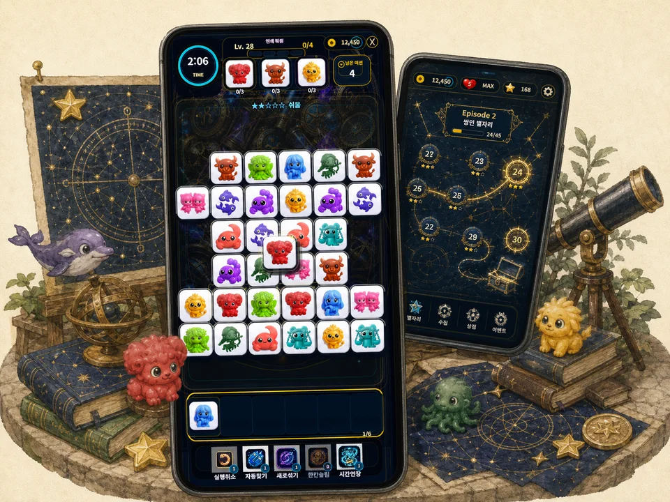
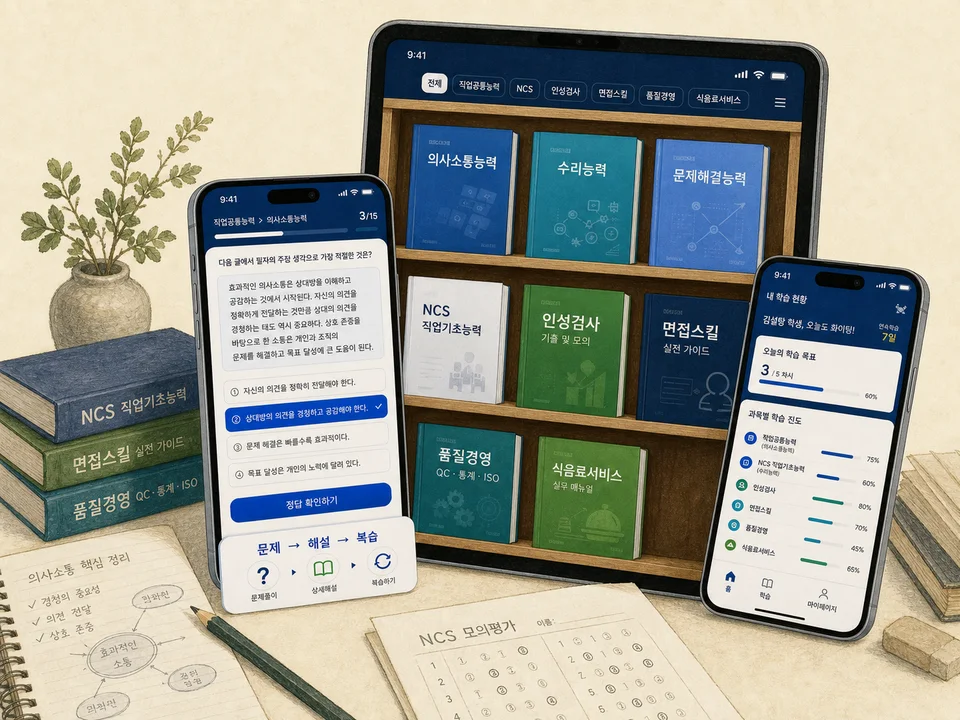
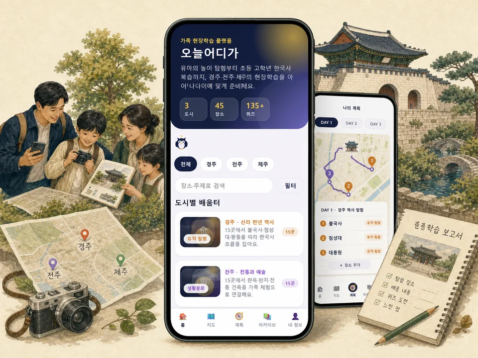
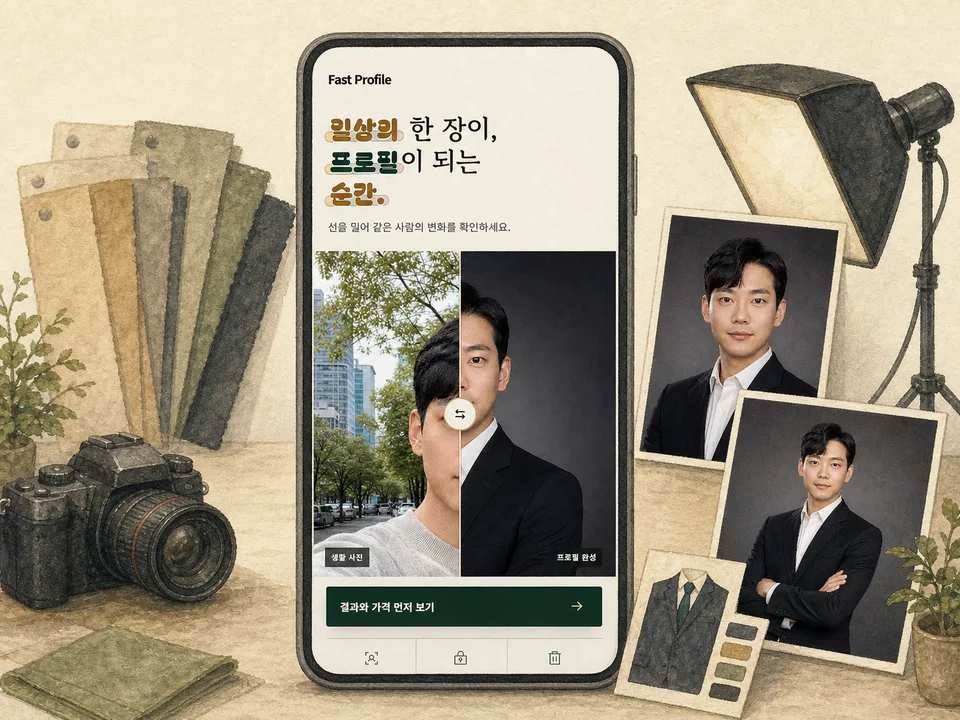
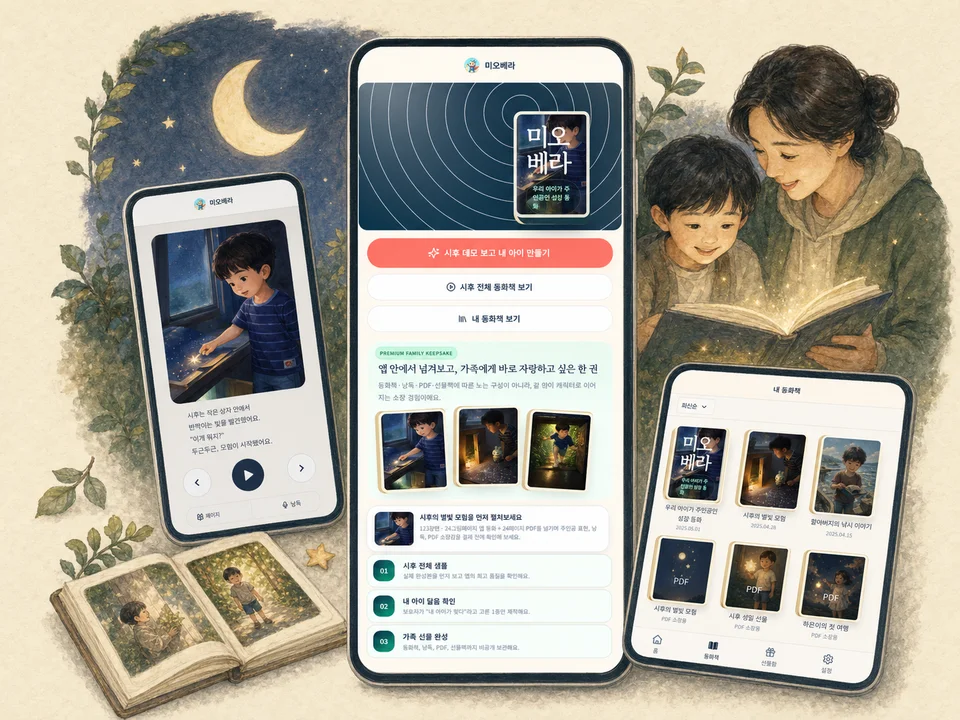
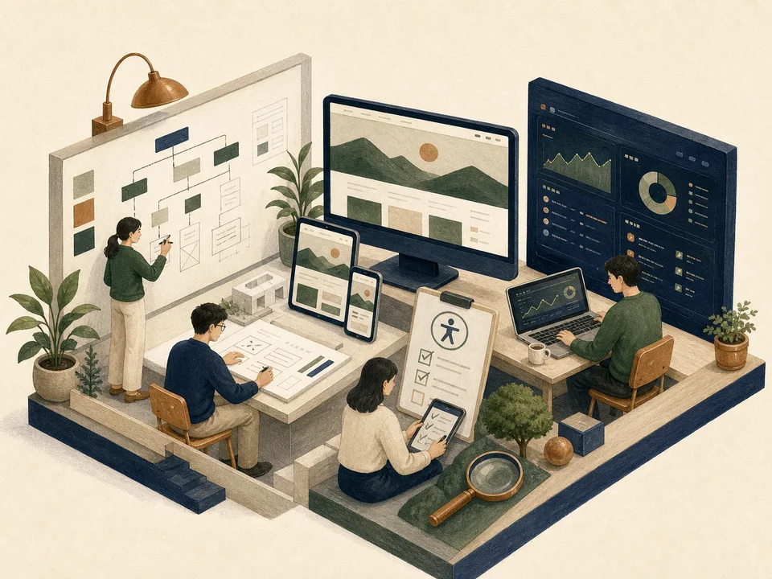

개발 중 · 게임버블 노바 스타별자리 · 타일 매치 · 휴식Pillar 03 · Build & Launch
앱 · 웹 서비스

개발 중 · 교육 앱설탕과소금 학습 앱직업공통 · NCS · 면접 · 인성학습 서비스 살펴보기 →
개발 중 · 체험학습오늘어디가역사 탐색 · 가족 여행 · 체험 보고서1분 체험 시작 →
비공개 실증 중 · 프로필Fast Profile생활 사진 한 장 → 증명·상반신 프로필서비스 살펴보기 →
기획 · 제작 · 가족미오베라 모험동화사진으로 만드는 우리 아이 이야기웹 체험 시작 →
운영 지원 · 기관 웹홈페이지 제작 · 운영정보구조 · 반응형 화면 · 유지관리운영 사례 →기획교육 현장의 문제 정의
제작앱·콘텐츠·웹 구현
검증기기·언어·사용 흐름 점검
운영출시 이후 개선과 지원
작은 아이디어도 서비스가 됩니다.
교육·콘텐츠·기관 운영 협업